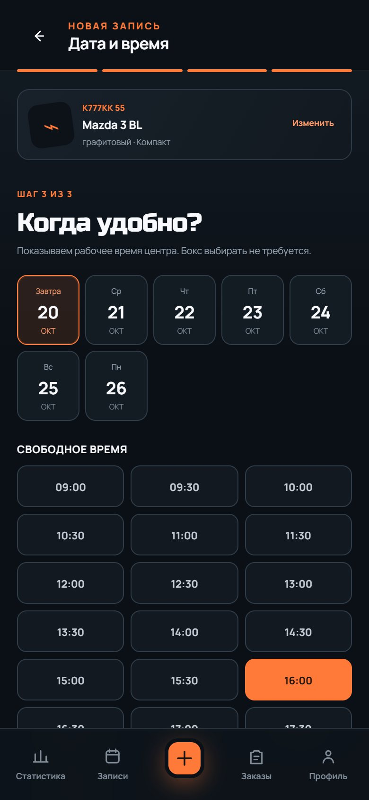
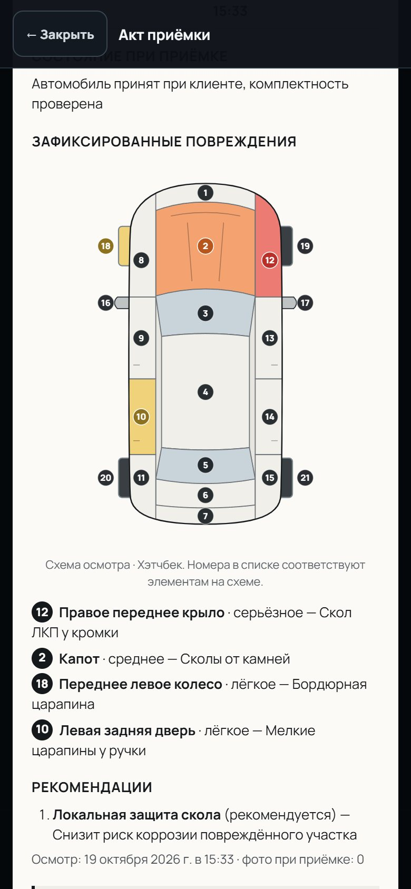

Повреждения зафиксированы до начала работ
Каждое замечание привязано к пронумерованному элементу кузова и попадает в акт приёмки, который клиент подписывает на экране.
Запись, приёмка со схемой повреждений, смета с согласованием, работа мастера и акты с подписью клиента. DetailFlow сделан для бокса, а не для офиса: работает с телефона и продолжает работать, когда пропала сеть.
Каждое замечание привязано к пронумерованному элементу кузова и попадает в акт приёмки, который клиент подписывает на экране.
Клиент, автомобиль, услуги, смета, фото, работы и документы связаны одним заказом. Видно, на каком он этапе и кто за него отвечает.
Записи, приёмка, работы и выдача продолжают работать без интернета. Изменения уйдут на сервер сами, когда связь вернётся.
Пять шагов, которые проходит каждый автомобиль. Сотрудник видит только то, что нужно на текущем шаге.
Найдите клиента по телефону или госномеру, выберите автомобиль и услуги — цена и длительность считаются сразу с учётом класса машины.

Выберите тип кузова и отметьте повреждения прямо на схеме автомобиля. У каждого элемента свой номер — так же он будет подписан в акте.

Смета собирается из записи и рекомендаций. После выпуска версия не меняется — клиент согласует именно то, что видел.
Заказ назначается свободному мастеру. Он отмечает выполненные операции, ставит паузу с причиной — администратор видит прогресс в реальном времени.

Фото результата, проверка комплектности и акт выдачи, который клиент подписывает пальцем на экране. Номер акта присваивается автоматически.

Своя схема для каждого типа кузова: у купе одна дверь на сторону, у минивэна — сдвижная, у пикапа — платформа и задний борт. Номер элемента одинаковый на экране, в списке замечаний и в акте.
Записи, новые клиенты и автомобили, приёмка, смета, работы мастера, выдача и подпись актов — всё это доступно без сети. Когда связь вернётся, изменения отправятся сами и в правильном порядке.
Готовые роли и свои: отметьте, что сотрудник может делать — записывать, принимать, согласовывать, выполнять работы, видеть статистику.
Разделы, услуги, время работы и цена для каждого класса автомобиля. Комплексы собираются из услуг. Всё настраивается вручную, без программиста.
Все визиты, приёмки и работы по машине — даже если у неё сменился владелец. Карточка клиента с контактами и автомобилями.
Сотрудник входит по коду из бота — без паролей. Приглашение в команду отправляется ссылкой.
Записи, заказы, закрытые работы и согласованные суммы за 7, 30 и 90 дней, с динамикой по дням.
Интерфейс сделан под палец и под одну руку. На планшете — две колонки. Для Android есть приложение, которое открывается без сети.
Акт приёмки собирается из осмотра автоматически: схема автомобиля с отмеченными элементами, список повреждений с теми же номерами, фото и подпись клиента.
Нет. DetailFlow открывается в браузере телефона, планшета или компьютера. Для Android есть отдельное приложение — оно запускается и без интернета.
Поиск клиентов, новые записи, клиенты и автомобили, приёмка с фото, смета и согласование, работы мастера, выдача и подпись актов. Когда сеть появится, изменения отправятся сами; если за это время время записи заняли, вы увидите пометку.
Нет, если вы этого не разрешите. Доступ настраивается галочками в роли: мастер по умолчанию видит только назначенные ему заказы.
Да. Каталог состоит из ваших разделов и услуг: название, время работы и цена для каждого класса автомобиля. Из услуг собираются комплексы.
Сотрудник открывает акт на телефоне или планшете, клиент проверяет содержимое и расписывается пальцем. После подписи содержимое акта больше не меняется.
Откройте приложение и пройдите путь автомобиля сами: от записи до подписанного акта.